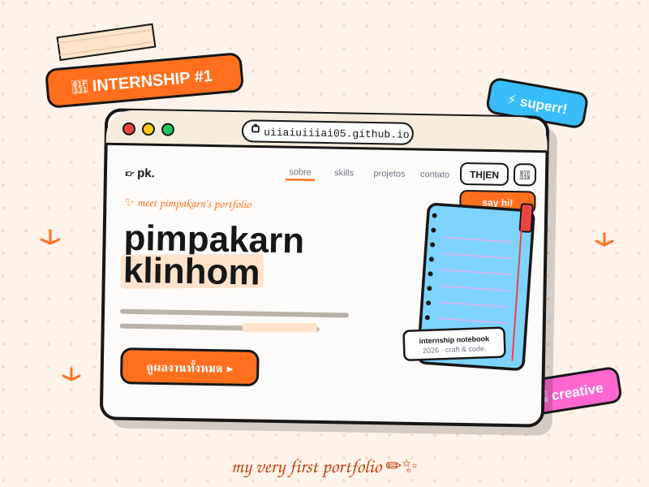
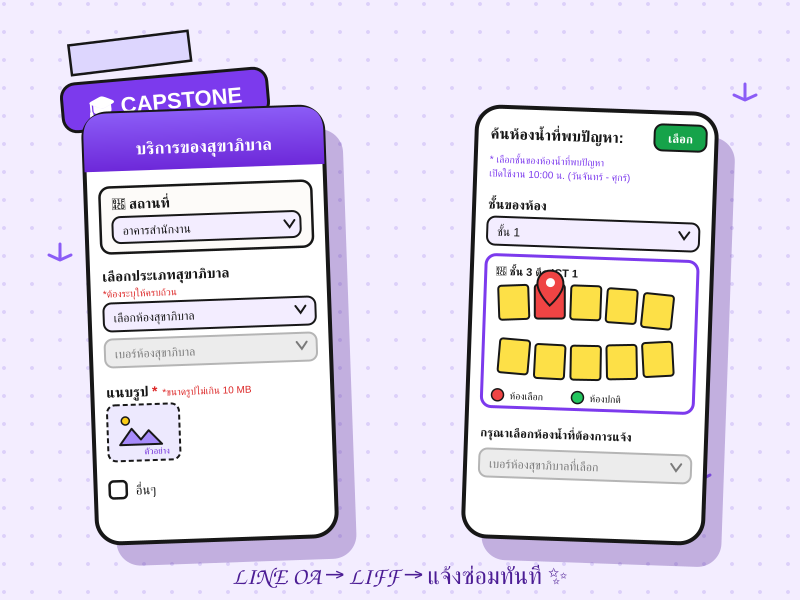

นักศึกษาฝึกงานสาย ui/ux design และ creative development ที่หลงใหลการสร้างสรรค์ประสบการณ์ที่เรียบง่าย สวยงาม และใช้งานได้จริง
ฉันเป็นนักศึกษาที่มีความหลงใหลใน UI/UX Design และ Frontend Development ชอบสร้างประสบการณ์ที่ดีให้กับผู้ใช้ผ่านการออกแบบที่สวยงามและมีประสิทธิภาพ ปัจจุบันกำลังฝึกงานและพัฒนาทักษะด้านการออกแบบและพัฒนาเว็บไซต์
มหาวิทยาลัยพะเยา (มุ่งเน้นการศึกษาด้านการออกแบบประสบการณ์ผู้ใช้ (UX/UI) และการพัฒนาส่วนหน้าของเว็บไซต์)

ผลงานชิ้นแรกจากการฝึกงานที่ริเริ่มขึ้นตั้งแต่วันแรก โดยการนำเอาองค์ความรู้ เทคนิค และแนวทางการพัฒนาเว็บที่ได้รับจากพี่เลี้ยง มาถ่ายทอดเป็นโปรเจกต์จริงทันที พร้อมทั้งนำเทคโนโลยี AI Agent เข้ามาสเกลกระบวนการทำงานและช่วยแก้ปัญหาเชิงเทคนิคอย่างเป็นระบบ

ระบบแจ้งซ่อมและติดตามสถานะงานสุขาภิบาลอัจฉริยะ ออกแบบมาเพื่อแก้ปัญหาความล่าช้าในการแจ้งซ่อมภายในคณะ ICT โดยผู้ใช้สามารถสแกน QR Code ประจำจุดเพื่อแจ้งซ่อมผ่าน LINE Official Account (LIFF) ได้ทันที โดยไม่ต้องดาวน์โหลดแอปพลิเคชันเพิ่มเติม พร้อมมีระบบบริหารจัดการสำหรับผู้ดูแลระบบและวิเคราะห์สถิติ
วางแผนกำหนดกรอบระยะเวลาพัฒนา (Sprint Planning), บริหารจัดการ Product Backlog และหมุนเวียนการทำหน้าที่ลีดเดอร์กำกับ workflow ทีม
เก็บรวบรวม Requirement จากผู้ใช้งานจริง, จัดทำบันทึกการประชุม (Meeting Minutes) และสรุปโจทย์ทางธุรกิจเป็น Functional Spec
พัฒนา UI บน LIFF Web App รองรับฟอร์มแจ้งซ่อม, แสดงพิกัดห้องน้ำ (Geolocation Mapping) และระบบติดตามสถานะแบบเรียลไทม์
สนใจร่วมงาน แลกเปลี่ยนไอเดีย หรือมีคำถาม ติดต่อได้ทางนี้เลยนะคะ